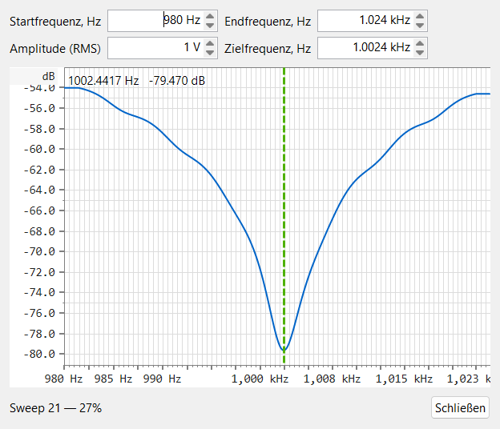

Wie die Messung hinter dieser Anzeige funktioniert — ein abgespielter logarithmischer Sweep, entfaltet gegen die Referenz, der den Frequenzgang der Kerbe in einem Durchlauf gewinnt — siehe Funktionsprinzip ▸ Frequenzgang.

Ein passives Kerbfilter (typischerweise ein Doppel-T-Filter) vor dem Eingang ist der klassische Weg, Verzerrungen unterhalb des Eigenrauschens des Analysators zu messen: Es entfernt die Grundschwingung vor dem ADC, sodass die FFT die Oberwellen ohne die eigenen Verzerrungsprodukte des Wandlers sieht. Das Kerbfilter funktioniert aber nur, wenn seine Kerbe exakt auf der Testfrequenz liegt — und bei einem Doppel-T-Filter wandern Mittenfrequenz und Tiefe beim Drehen der Trimmer gemeinsam. Der Assistent liefert ein live, kontinuierlich aktualisiertes Bild der Kerbe, sodass Sie die Kerbe beim Justieren des Filters mit dem Schraubendreher in der Hand wandern sehen.
Öffnen Sie ihn über das Hauptmenü: Extras ▸ Kerbfilter abgleichen…. Solange der Dialog geöffnet ist, übernimmt er Wiedergabe und Aufnahme — Generator, Oszilloskop, FFT und ein laufender Frequenzgang-Sweep werden für die Dauer angehalten. Verdrahten Sie den Signalweg wie für die spätere Verzerrungsmessung: Ausgang ▸ Kerbfilter ▸ Eingang.
| Steuerelement | Hinweise |
|---|---|
| Startfrequenz, Hz | Untere Grenze des angezeigten Bandes. Akzeptiert kHz-Kurzschreibweise —
die Eingabe 1.5k bedeutet 1500 Hz; reine Ziffern
werden als Hz gelesen. |
| Endfrequenz, Hz | Obere Grenze des angezeigten Bandes, bis zur Nyquist-Frequenz. |
| Amplitude (RMS) | Ausgangspegel des Abgleich-Sweeps in Volt RMS; akzeptiert µV / mV / V / dBV. |
| Zielfrequenz, Hz | Die Frequenz, auf die Sie das Kerbfilter abgleichen — als gestrichelte vertikale Markierung in der Darstellung gezeichnet (siehe unten). |
| Schließen | Stoppt die Abgleichschleife, gibt das Audiogerät frei und stellt die normale Frequenzgang-Ansicht wieder her. |
Alle vier Werte werden zwischen Sitzungen gespeichert. Das Bearbeiten der Start-/Endfelder skaliert die Frequenzachse sofort neu.
Was Sie sehen. Die Darstellung zeigt den Frequenzgang des gemessenen (Eingangs-)Kanals, neu aufgebaut etwa zehnmal pro Sekunde aus einem kurzen, in Schleife laufenden Sweep (rund eine Viertelsekunde pro Durchlauf) — jede Trimmerdrehung wird innerhalb eines Sekundenbruchteils sichtbar. Die vertikale Achse passt sich automatisch an die Kurve an. Drei Live-Elemente liegen auf der Darstellung:
Abgleich-Vorgehen. Stellen Sie die Zielfrequenz auf Ihre
Verzerrungs-Testfrequenz ein und rahmen Sie sie mit dem Start-/Endband ein.
Drehen Sie den Frequenz-Trimmer des Kerbfilters, bis die Kerbenfrequenz der
Anzeige auf der Zielfrequenz landet und die Markierung grün wird; justieren
Sie dann den Abgleich-/Tiefen-Trimmer auf maximale Tiefe — bei einem
Doppel-T-Filter beeinflussen sich beide gegenseitig, iterieren Sie also
einige Male. Sitzt die Kerbe mit voller Tiefe auf der Zielfrequenz,
schließen Sie den Assistenten und messen zunächst den eigenen Frequenzgang
des Kerbfilters mit einem normalen Sweep und speichern ihn in eine
.frc-Datei. Laden Sie diese als Kalibrierung im
FFT-Bereich, damit die Form der Kerbe aus der Messung
herausgerechnet wird, und führen dann dort die Verzerrungsmessung durch.
Die Messung hinter der Anzeige ist dieselbe Entfaltung des abgespielten
Sweeps wie bei einem normalen Frequenzgang-Lauf — siehe
Funktionsprinzip ▸ Frequenzgang.